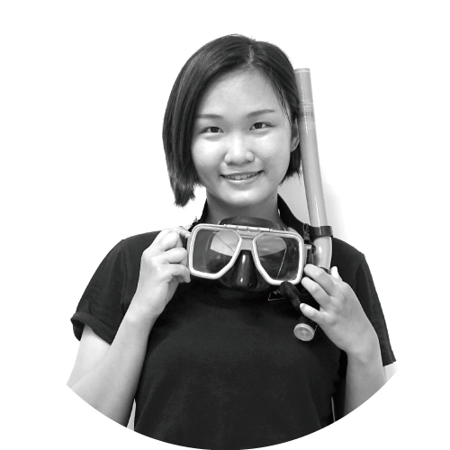

ABOUT

LEE YEN-HUI
李 妍慧
Phone : (+886)937-862-547
Mail: yamsi086@gmail.com
EDUCATION
國立雲林科技大學 創意生活設計所
國立台灣藝術大學 視覺傳達設計系
DESIGN SKILL
Graphic design / Illustration
Photography / Film editing
AWARD
2016外交部 一秒秀台灣短片比賽 銅獎
2017新一代設計 包裝設計組 銀獎
ACTIVTIES
2018第五屆 PIXNET HACKATHON
2017國際青年創業領袖計劃（YEF）
2016藝術與設計菁英海外培訓工作營
WORK EXPERIENCES
2017-2019
視覺設計師/關鍵評論網股份有限公司
- 圖解懶人包整體視覺設計與企劃，平均在2週內與PM、企劃合作，完成發想、設計、對稿並上刊等工作。曾在Nissan Kicks專案中，達成雙週點擊5000次的紀錄。
- 2019年主動提出嘗試接觸企劃，並獨立完成行銷部自製專題-陸上交通的進化史極短篇漫畫。
- 協助部門優化SOP , 將圖解懶人包前期作圖時間由8天縮減為5天。
- 一頁式網站設計，平均在2週內完成發想、設計、與工程師討論等工作。曾在ＡＷＳ專案中，達成2周內吸引220人報名的紀錄。
- 廣告banner製作，平均在3天內根據客戶需求，完成相關尺寸之廣告。
2015-2016
專案執行/嘉義縣政府青年社規師計畫
- 籌辦6場社區體驗- 參與人數約80人，完成6項傳統料理圖文記錄，並改造1處社區閒置空間。
- 籌辦2場社區小旅行-參與人數約30人，用以推廣社區特色文化。
2013-2014
兼任助理/教育部智慧生活整合性人才培育計畫
- 籌辦4場跨領域工作坊-參與人數共140人，學生與原民藝術家的共同創作出40組作品。
- 撰寫專案計畫書，並參與跨校聯展。